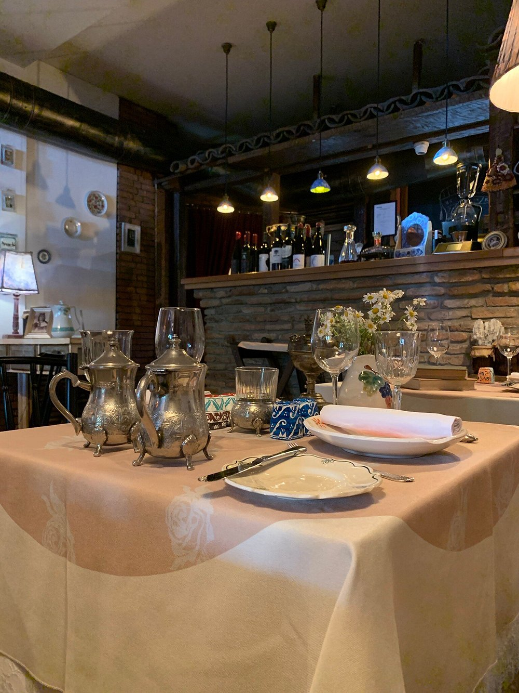

თბილისიბარბარესთან
Barbarestan · კლასიკური ქართული
XIX საუკუნის სამზარეულოს წიგნზე დაფუძნებული უნიკალური რესტორანი — ბარბარე ჯორჯაძის ისტორიული რეცეპტები თანამედროვე მიწოდებით. ერთ-ერთი ყველაზე სახელგანთქმული ადგილი კავკასიაში.
ქათმის გულიკლასიკური სახარშიქართული ღვინო